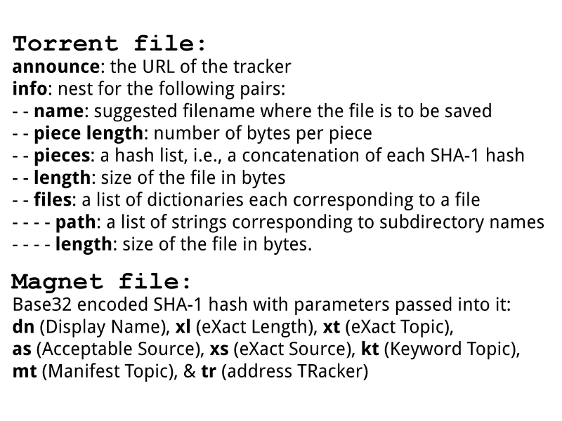
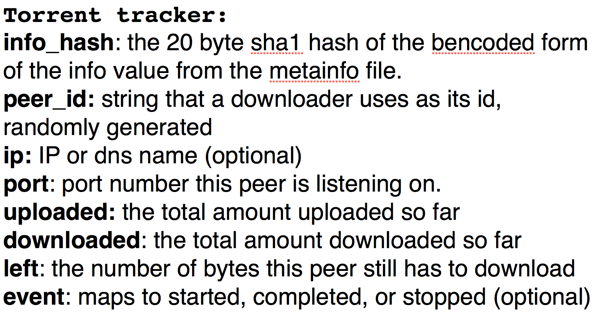

Seeding and Leeching: Collaborative Preservation using BitTorrent
Ashley Blewer, #amia15
Torrents in archives
Torrents as archives
Copy, right?
Copy, right?
Tech stacks on stacks
PROTOCOL
HTTP?
(GET, PUT, POST, DELETE, etc)
BitTorrent protocol requirements
- a web server
- 'metainfo' file*
- torrent tracker
- 'original' downloader
- end user web browsers
- end user downloaders
BitTorrent as a file
BitTorrent as a tracker
Peers
Handshake
TCP

Two things
1. Are you busy?
2. Are you interested?
Metainfo file!
Randomness
1-to-1
Switching gears
“When a file is made available using HTTP, all upload cost is placed on the hosting machine. With BitTorrent, when multiple people are downloading the same file at the same time, they upload pieces of the file to each other. This redistributes the cost of upload to downloaders, (where it is often not even metered), thus making hosting a file with a potentially unlimited number of downloaders affordable.”